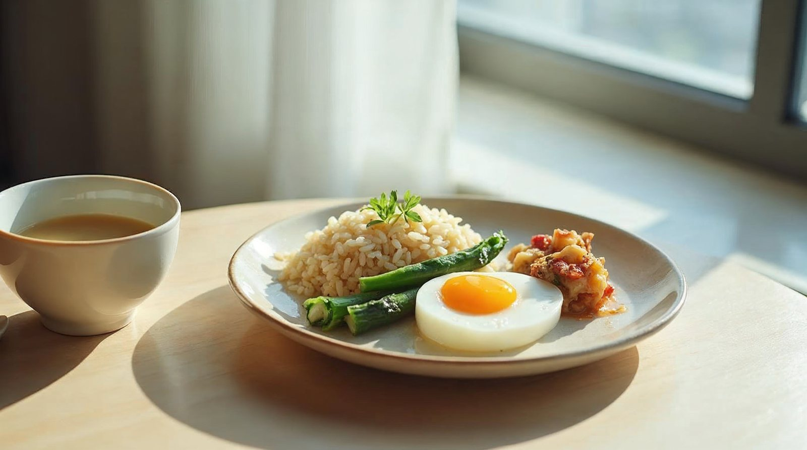
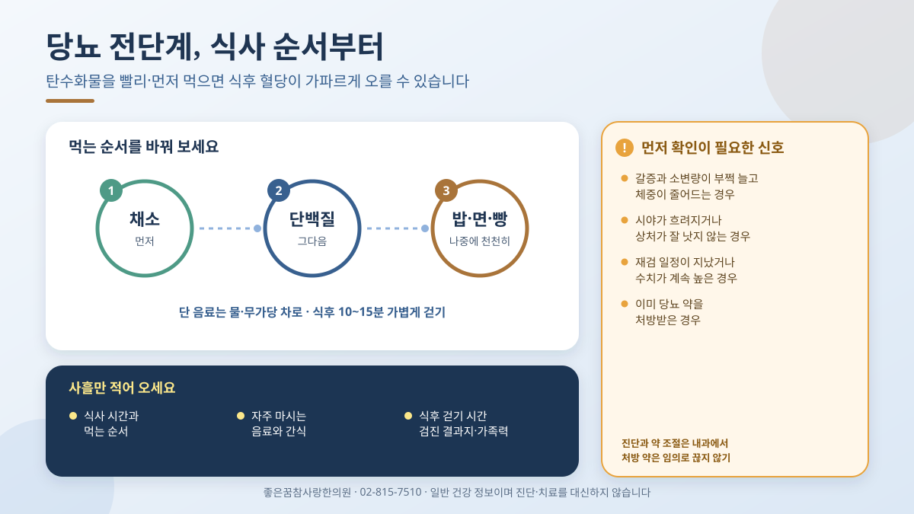

이종호 한의사 감수좋은꿈참사랑한의원 대표원장 (한의사 면허번호 19769)발행 2026-11-22 · 수정 2026-11-26
이 글의 차례
검진 결과지를 받아 든 저녁, 식탁에 앉아 '당뇨 전단계'라는 글자를 몇 번이고 다시 읽으셨다는 분이 많습니다. 밥 한 숟가락을 뜨다가도 이걸 먹어도 되나 싶어 손이 멈칫하고, 괜히 가족 눈치가 보이기도 합니다. 저는 그 놀란 마음을 먼저 알아드리고 싶습니다.
당뇨 전단계는 겁이 나는 말이지만, 동시에 지금의 생활을 돌아볼 수 있는 시간이 아직 남아 있다는 뜻으로도 읽을 수 있습니다. 결과를 약속드릴 수는 없지만, 식사 순서와 간식, 식후 걷기처럼 오늘 저녁부터 바꿔 볼 수 있는 것들은 분명히 있습니다. 재검과 진단은 내과에서 받으시도록 함께 챙기겠습니다.
"단것은 거의 안 먹는데요"
진료실에서 이런 말씀을 자주 듣습니다. "원장님, 저는 사탕도 안 먹고 케이크도 안 먹어요. 그런데 왜 혈당이 높대요?" 억울한 마음이 묻어 있는 말입니다.
그럴 때 저는 하루 식사를 처음부터 다시 여쭤봅니다. 아침은 바쁘니 빵 한 조각과 커피믹스, 점심은 짧은 시간에 면 요리나 덮밥을 빨리 드시고, 오후에는 졸음을 쫓으려 믹스커피 한 잔 더. 저녁은 늦게 밥 한 공기를 다 비우고 바로 소파에 앉습니다.
이 하루에 '단것'이라고 부를 만한 것은 많지 않아 보입니다. 하지만 밥과 면, 빵 같은 탄수화물이 빠르게, 그리고 먼저 들어가는 끼니가 계속 이어집니다.
혈당은 사탕만으로 오르는 것이 아니라, 무엇을 어떤 순서로 얼마나 빨리 먹는지에도 영향을 받는다고 알려져 있습니다. 그러니 억울해하실 일이 아니라, 그동안 보지 못했던 습관 하나를 이제 알게 되신 것이라고 말씀드립니다.
왜 혈당이 경계까지 올라올까요
밥이나 면, 빵을 빈속에 먼저, 빨리 드시면 식후 혈당이 가파르게 오를 수 있습니다. 반대로 채소나 단백질 반찬을 먼저 드시면 같은 양을 드셔도 오르는 속도가 조금 완만해질 수 있다는 이야기가 많이 알려져 있습니다. 단 음료와 커피믹스, 간식이 하루 여러 번 끼어들면 혈당이 자주 오르내리게 되고요.
식사 뒤 바로 앉거나 눕는 생활도 함께 봅니다. 먹은 뒤 근육을 조금이라도 움직이면 혈당을 쓰는 데 도움이 될 수 있다고 하는데, 하루 대부분을 앉아서 보내면 그 기회가 줄어듭니다. 잠이 모자라거나 뱃살이 늘어날 때도 혈당 조절이 어려워지는 경향이 있습니다. 가족 중에 당뇨가 있는 분이라면 같은 생활에서도 조금 더 마음을 쓰시는 게 좋겠습니다.
그러니까 당뇨 전단계는 어느 한 음식 탓이라기보다, 하루의 식사 리듬과 움직임, 잠이 함께 만든 결과인 경우가 많습니다. 저는 그래서 한 가지를 탓하기보다 그 하루 전체를 같이 들여다보고 싶습니다.
진료실에서 자주 만나는 모습들
어느 한 분의 이야기가 아니라, 진료실에서 비슷하게 자주 듣게 되는 모습들을 모아 보았습니다.
점심을 늦게, 급하게 드시고 오후 서너 시만 되면 커피믹스와 과자를 찾게 된다는 직장인이 계십니다. 오후 간식은 의지가 약해서가 아니라 점심이 너무 빨리, 탄수화물 위주로 들어간 뒤 몸이 다시 허기를 느끼는 흐름일 수도 있습니다.
이런 분과는 점심을 채소와 단백질 반찬부터 드시는 순서로 바꿔 보고, 오후 간식은 종류와 양을 아침에 미리 정해 가방에 넣어 오시는 것부터 이야기합니다. 간식을 없애는 것이 아니라, 고르는 시간을 배고플 때가 아닌 아침으로 옮기는 것입니다.
저녁은 일찍 드시는데 밤 10시쯤 과일이나 떡을 드신다는 어르신도 자주 뵙습니다. "과일은 몸에 좋은 거 아니에요?" 하고 되물으시는데, 맞는 말씀입니다. 다만 한 번에 많이, 늦은 밤에 드시면 혈당 입장에서는 부담이 될 수 있습니다. 그래서 늦은 간식의 시간과 양을 일주일만 적어 보시고, 식후 걷기를 저녁 식사 뒤로 옮겨 보시자고 함께 정합니다.
야근이 잦아 낮에는 끼니를 거르다 밤에 몰아 드시는 분도 있습니다. 이런 분께 무엇을 먹으라고 하는 것은 순서가 아닌 것 같습니다. 먼저 끼니 간격을 조금이라도 일정하게 맞추는 것, 예컨대 오후 네 시쯤 삶은 달걀이나 우유 한 잔이라도 드셔서 밤에 몰아 먹는 양을 줄이는 것부터 이야기합니다.
먼저 이렇게 여쭙니다
처음 뵈면 이런 것들을 여쭙니다.
- 하루 몇 끼를 몇 시에 드시는지
- 밥과 면, 빵을 반찬보다 먼저 드시는지
- 단 음료와 커피믹스, 간식은 하루에 얼마나 드시는지
- 식사 뒤에 움직이거나 걷는 시간이 있는지
- 가족 중에 당뇨가 있는지
- 하루 중 언제 단 것이 가장 당기는지
마지막 질문을 저는 특히 아낍니다. 단 것이 당기는 시간을 알면 그 앞의 끼니와 잠이 보이기 때문입니다.

오늘 저녁부터 해 볼 수 있는 것
식사 순서는 생각보다 단순합니다. 밥상에 앉으면 나물이나 샐러드 같은 채소를 먼저 몇 젓가락, 그다음 두부나 생선, 고기, 달걀 같은 단백질 반찬, 밥은 마지막에 천천히 드셔 보세요. 처음에는 어색하실 수 있습니다. 밥부터 한 숟가락 뜨는 게 우리 몸에 밴 순서니까요. 그래도 일주일쯤 해 보시면 손이 먼저 반찬으로 가는 날이 늘어납니다.
천천히 드시는 것도 함께 해 보시면 좋겠습니다. 한 숟가락 뜨고 숟가락을 잠시 내려놓는 것만으로도 식사 시간이 늘어납니다. 흰쌀밥에는 잡곡을 조금씩 섞어 보시고, 밥그릇을 한 치수 작은 것으로 바꿔 보세요. 같은 한 공기라도 그릇이 작으면 마음이 덜 허전합니다.
단 음료는 물이나 보리차, 무가당 차로 조금씩 바꿔 보세요. 하루 두세 잔 드시던 커피믹스를 한 잔으로 줄이는 것부터 시작해도 괜찮습니다. 간식은 봉지째 들고 드시지 말고, 먹을 만큼 그릇에 덜어 두세요. 봉지가 비는 속도는 생각보다 빠릅니다.
그리고 식후 걷기입니다. 식사를 마치고 10~15분, 동네 한 바퀴나 회사 건물 계단 몇 층이면 충분합니다. 한 번에 한 시간 운동하는 것보다 매 끼니 뒤에 조금씩 움직이는 편이 생활에 붙이기 쉽습니다.
비가 오는 날에는 집 안에서 설거지를 서서 하시거나 제자리걸음을 하셔도 됩니다. 잠도 빼놓을 수 없습니다. 잠이 모자란 다음 날 유난히 단 것이 당기셨던 기억, 한 번쯤 있으실 겁니다.

아침 한 끼가 하루를 정합니다
아침을 거르시는 분이 생각보다 많습니다. 입맛이 없고, 출근 준비로 바쁘고, 한 끼 줄이면 살도 빠질 것 같으니까요. 그런데 아침을 거르면 점심에 허기가 몰려 밥을 빨리, 많이 드시게 되기 쉽습니다. 그 점심 뒤에 졸음이 오고, 오후에 단 것이 당기는 흐름으로 이어지는 경우를 자주 봅니다.
거창한 아침상이 아니어도 괜찮습니다. 삶은 달걀 하나와 방울토마토 몇 알, 무가당 두유 한 잔, 전날 저녁에 남겨 둔 나물 반찬과 밥 반 공기 정도면 충분합니다. 빵을 드신다면 잼보다 달걀이나 치즈를 곁들이시고, 달콤한 시리얼보다는 귀리처럼 덜 가공된 곡물을 고르시면 좋겠습니다.
아침에 단백질이 조금 들어가면 점심까지 버티기가 한결 수월하다고 말씀하시는 분이 많습니다. 아침에 도저히 입맛이 없다면 출근길에 우유 한 팩이라도 챙겨 두셨다가 오전 열 시쯤 드셔도 괜찮습니다.
외식과 회식 자리에서는
"집에서는 해 보겠는데 밖에서는 어떻게 해요?" 이 질문도 자주 받습니다. 밖에서 드실 때도 순서는 그대로 가져가실 수 있습니다. 한식집이라면 밑반찬으로 나오는 나물과 김치, 두부부터 몇 젓가락 드시고, 메인 요리의 고기나 생선을 드신 뒤에 밥을 드세요.
공깃밥은 처음부터 반을 덜어 두시면 마음이 편합니다. 면 요리를 드셔야 하는 날에는 곁들여 나오는 채소나 달걀을 먼저 드시고, 국물은 조금 남기셔도 좋습니다.
회식 자리에서는 술과 안주가 길게 이어지니, 처음 한 시간에 무엇을 드시는지가 중요합니다. 빈속에 술부터 드시기보다 채소 안주나 구이를 먼저 드시고, 마지막에 나오는 볶음밥이나 면은 한두 숟가락으로 맛만 보셔도 충분합니다. 다음 날 아침을 거르지 않는 것도 잊지 마세요.
가족과 함께 바꾸면
식사 순서는 혼자보다 식구들과 함께 바꿀 때 훨씬 오래갑니다. 밥상에 나물 한 접시를 먼저 올리고 밥은 조금 늦게 퍼 두는 것, 식사 뒤에 다 같이 동네 한 바퀴를 걷는 것. 이런 일은 당뇨 전단계를 들으신 한 분만을 위한 일이 아니라 온 가족의 밥상을 함께 돌보는 일이 됩니다.
"나 때문에 다들 불편하게 하는 것 같아서" 하고 미안해하시는 분도 계신데, 저는 그 미안함을 내려놓으셔도 된다고 말씀드립니다. 식구들에게도 좋은 습관입니다.
숫자 앞에서 겁이 날 때
재검 날이 다가오면 잠을 설치신다는 분도 계십니다. 열심히 했는데 숫자가 그대로면 어떡하나, 더 나빠졌으면 어떡하나. 그 마음을 저는 충분히 이해합니다.
혈당 수치는 그날의 컨디션, 전날의 식사와 잠, 측정 조건에 따라서도 조금씩 흔들릴 수 있습니다. 한 번의 숫자로 그동안의 노력을 다 판단하지 않으셨으면 합니다. 식사 순서를 지킨 날, 식후에 걸은 날을 적어 둔 기록은 숫자와 상관없이 당신이 몸을 돌본 시간입니다.
한의원에서 함께 살필 수 있는 경우
이런 분들과는 함께 이야기해 볼 것이 많습니다.
- 식사 시간이 불규칙하고 먹는 양을 조절하기 어려운 분
- 식후 졸음이 심하고 오후만 되면 단 것이 당기는 분
- 몸이 쉽게 지치고 손발이 찬 분
식욕이 몰리는 시간, 식사 뒤 속의 상태, 잠의 깊이와 기력이 어떻게 이어지는지를 같이 살핍니다. 수치를 낮춰 드리겠다는 약속이 아니라, 그 수치가 나온 하루를 함께 다시 짜 보는 일입니다.
처음 오시면 이렇게 진료합니다
좋은꿈참사랑한의원에 처음 오시면 저는 검진 결과지를 함께 펼쳐 놓고 식사, 간식, 잠, 활동을 차례로 여쭙습니다. 그다음 양손을 올려 달라고 하고 두 손목의 맥을 차례로 짚습니다.
맥을 보는 동안에는 잠은 잘 드시는지, 자다가 깨시는지, 식사 뒤 더부룩하거나 속이 쓰리지는 않은지, 손발이 찬 편인지 몸이 더운 편인지 여쭙니다. 혀를 보고 배를 살피기도 합니다.
필요하다고 판단되면 원내 당화혈색소 검사와 인바디 770 체성분 측정으로 지금의 흐름을 기록해 둡니다. 그 뒤 식사 계획과 함께 침이나 한약 상담을 상태에 맞춰 정하고, 진단과 약 처방은 내과에서 받으시도록 안내합니다.
다시 오시면 지난번 이야기부터 이어서 여쭙습니다. 식사 순서는 해 보셨는지, 해 보니 무엇이 어려우셨는지. 지키기 어려웠던 사정까지 들어야 다음 계획을 함께 정할 수 있습니다.
얼마나 지켜보고, 언제 내과에 가야 할까요
식사 순서와 식후 걷기 같은 생활 변화는 며칠 만에 판단하기 어렵습니다. 적어도 2~4주는 이어 가며 기록해 보세요. 참고로, 일반적으로 공복혈당 100~125mg/dL이나 당화혈색소 5.7~6.4% 정도를 당뇨 전단계 범위로 안내하는 경우가 많습니다. 기준은 지침에 따라 조금씩 다를 수 있으니 결과지의 안내와 내과 의사의 설명을 우선하세요.
재검 시기는 내과에서 안내한 간격을 따르시고, 결과지는 버리지 말고 모아 두시면 흐름을 비교하기 쉽습니다. 갈증과 소변량이 갑자기 늘고 체중이 빠진다면 기다리지 마시고 바로 내과 진료를 받으세요. 한 달 정도 생활을 바꿔 봐도 간식과 식욕 조절이 계속 어렵다면 상담을 받아 보셔도 좋습니다.

이렇게 기록해 오시면 상담이 쉬워집니다
사흘 동안의 식사 시간과 먹은 순서, 자주 마시는 음료와 간식, 식후에 걸은 시간 정도면 충분합니다. 최근 검진 결과지와 가족력도 함께 알려 주세요. 식후 걷기를 한 날과 못 한 날, 그리고 못 한 이유를 한 줄씩 적어 오시면 더 좋습니다. "비가 와서", "회식이 있어서" 같은 이유 속에 다음 계획의 실마리가 들어 있습니다.
이런 증상은 먼저 확인이 필요합니다
- 갈증과 소변량이 부쩍 늘고 체중이 줄어드는 경우
- 시야가 흐려지거나 상처가 잘 낫지 않는 경우
- 정기 재검 일정이 지났거나 수치가 계속 높게 나오는 경우
이런 경우에는 내과 진료를 먼저 받으세요. 심한 갈증과 함께 구토나 배 통증이 있거나, 숨이 가쁘고 정신이 흐려지면 한의원 진료를 기다리지 말고 가까운 응급실을 이용하세요. 이미 당뇨 약을 처방받으셨다면 복용 중인 약은 처방한 의사와 상의 없이 줄이거나 끊지 않습니다.
당뇨 전단계라는 말을 들으신 날, 많은 분들이 "이제 큰일 났다"고 생각하십니다. 저는 조금 다르게 말씀드리고 싶습니다. 몸이 먼저 신호를 보내 주었고, 우리는 그 신호를 들을 시간이 있다고요. 오늘 저녁 밥상에서 나물 한 젓가락을 먼저 집어 보시는 것, 거기서부터 시작해 보시면 좋겠습니다.
함께 읽으면 좋은 글
- 당화혈색소(HbA1c) 수치는 무엇을 뜻하나요?
- 공복혈당이 경계 수준이라고 들었을 때
- 과일은 먹어도 되나요? 당이 걱정될 때 과일 먹는 법

여쭙는 것
- 하루 몇 끼를 몇 시에 드시는지
- 밥과 면, 빵을 반찬보다 먼저 드시는지
- 단 음료와 커피믹스, 간식은 하루에 얼마나 드시는지
한의원에서 함께 살필 것
- 식사 시간이 불규칙하고 먹는 양을 조절하기 어려운 분
- 식후 졸음이 심하고 오후만 되면 단 것이 당기는 분
- 몸이 쉽게 지치고 손발이 찬 분
먼저 확인이 필요한 신호
- 갈증과 소변량이 부쩍 늘고 체중이 줄어드는 경우
- 시야가 흐려지거나 상처가 잘 낫지 않는 경우
- 정기 재검 일정이 지났거나 수치가 계속 높게 나오는 경우
한눈에 보는 표
| 구분 | 핵심 |
|---|---|
| 여쭙는 것 | 하루 몇 끼를 몇 시에 드시는지 밥과 면, 빵을 반찬보다 먼저 드시는지 |
| 한의원에서 함께 살필 것 | 식사 시간이 불규칙하고 먹는 양을 조절하기 어려운 분 식후 졸음이 심하고 오후만 되면 단 것이 당기는 분 |
| 먼저 확인이 필요한 신호 | 갈증과 소변량이 부쩍 늘고 체중이 줄어드는 경우 시야가 흐려지거나 상처가 잘 낫지 않는 경우 |
자주 묻는 질문
식사 순서를 바꾸면 혈당이 좋아지나요?
결과를 약속드리지는 않습니다. 채소와 단백질을 먼저, 밥은 나중에 천천히 드시는 순서와 식후 활동 같은 생활 방법을 함께 정하고 2~4주 기록하며 살펴봅니다.
과일은 먹어도 되나요?
한 번에 많이 드시지 말고 양을 정해 드시고, 주스보다 생과일로 드시는 것이 일반적인 방법입니다. 늦은 밤보다는 식사 가까운 시간이 부담이 덜합니다. 수치에 따라 내과의 안내를 따르세요.
재검은 언제 하나요?
병원에서 안내한 간격에 맞춰 꾸준히 받으세요. 결과지를 모아 두시면 흐름을 비교하기 쉽습니다.
한약을 먹으면 혈당에 영향이 있나요?
처방에 따라 다를 수 있어 당뇨 전단계나 당뇨 약 복용 여부를 꼭 알려 주세요. 검진 결과와 복용 약을 확인한 뒤 신중하게 정합니다.
식후 걷기는 꼭 바로 해야 하나요?
식사를 마치고 너무 오래 앉아 있지 않는 것이 요점입니다. 식후 10~15분 사이에 가볍게 움직이는 방법을 많이 권하며, 걷기 어려운 날에는 집안일을 서서 하시는 것도 괜찮습니다.
좋은꿈참사랑한의원은 재진 때 지난번 이야기부터 이어서 여쭙니다. 진료시간과 예약은 오시는 길에서 확인하세요.
어디서 상담받을 수 있나요?
좋은꿈참사랑한의원은 서울 동작구 만양로2길 2 신성빌딩 3층·5층(서울 동작구 상도동, 7호선 상도역 3번 출구 근처)에 있습니다. 한의사 3명(이종호 대표원장, 조영기 수석진료원장, 정원영 진료원장)이 진료합니다. 진료시간은 평일 09:30~20:00(점심 13:00~14:00), 토·일·공휴일 09:30~15:00이며, 방문 전 전화로 확인을 권합니다. 예약은 네이버 예약, 카카오톡 상담, 전화 02-815-7510로 받습니다.
이 글은 일반적인 건강 정보이며 개인의 진단이나 치료를 대신하지 않습니다. 증상이 있거나 복용 중인 약이 있다면 진료를 통해 확인하세요. 치료 효과는 개인마다 다를 수 있습니다.
작성 기준: 일반적으로 알려져 있는 건강 정보를 참고해 정리했습니다(대표원장 감수). 증상 기록은 1~2주 동안 하루 1회, 비슷한 시간에 적어 오시면 지난 상태와 비교하기 쉽습니다.